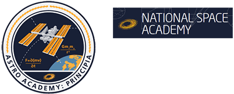

Astro Academy: Principia
In 1687 Sir Isaac Newton transformed our understanding of the laws of nature through publication of the Principia and now the National Space Academy, UK Space Agency, and European Space Agency bring you Astro Academy: Principia - a unique science education programme including:
- Orbital experiments conducted by astronaut Tim Peake aboard the International Space Station
- Dynamic analyses of the results
- Ground-based analogue experiment guides for students and teachers
- A suite of further space science and education guides
Resources in this collection include:
- Circular Motion. Tracker analyses of a ball on a tether and a ball in a circular track undergoing circular motion in various planes.

More information at: http://astroacademy.org.uk/